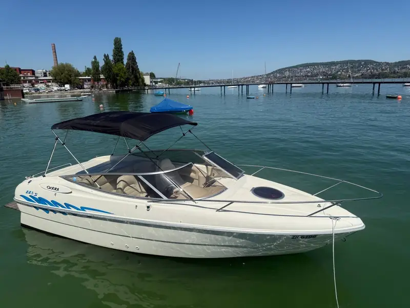

Sportboot
Gobbi 225 4.3 Sport
👥 Bis 7 Personen · Bootsführerschein nötig (oder mit Skipper)
Wendiges Sportboot für den perfekten Tag auf dem Zürichsee – ideal zum Cruisen, Baden und Sonnenbaden mit bis zu 7 Personen.
- Bimini-Sonnendach
- Badeplattform mit Leiter
- Kühlbox an Bord
- Bluetooth-Soundsystem